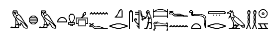

Dear Deitrich,
I've been working on the ancient ring for over 5 years and it feels like I
haven't moved a bit. The only success since its discovery has been the
translation of the hieroglyphs on the cover stone.



It talks about Ra - the god of Sun - burying his "doorway to heaven" a long time
ago. So the name of the ring must be "doorway to heaven" as it was buried below
the cower stone.
Unfortunately, we are still unable to decipher the other set of symbols. The
hieroglyphic text contains 2 names - Ra and "doorway to heaven". We tried
matching them to the name in the cartouche, but we were not successful.
I can feel that it is an important discovery, but without any successful
research, it is just an "unknown artifact", a curiosity to hang on a wall and
wonder about. Moreover, it is getting difficult to do any research with
expensive equipment or with renowned colleagues when our funding is running dry.
With my daughter Catherine, we've been living in the warehouse where we also
store all the artifacts. She even got her first part time job - cataloging items
at the Cairo museum - to help with our financial situation. I've also been doing
some odd jobs to get us more money. Like last week, I translated some Hebrew
inscriptions for a French archeologist.
I don't want to lose the opportunity to work on this ring. It is my life's work.
It is precious to me. And that's why I'm writing to you. You mentioned that the
German government recently established the Ahnenerbe institute and they are
interested in various ancient artifacts. Even though I generally despise the way
my fatherland recently decided to follow, it could help me with the research
now. Could you maybe try to get some funding from them? I don't have any
contacts in Germany anymore. - That is besides you. If you help with the
paperwork, you can have your share. We could even come up with a theory about
the Aryan race occupying Egypt before the Egyptian culture... if it helps us
convince them to finance our research.
With kindest regards,
Paul Langford